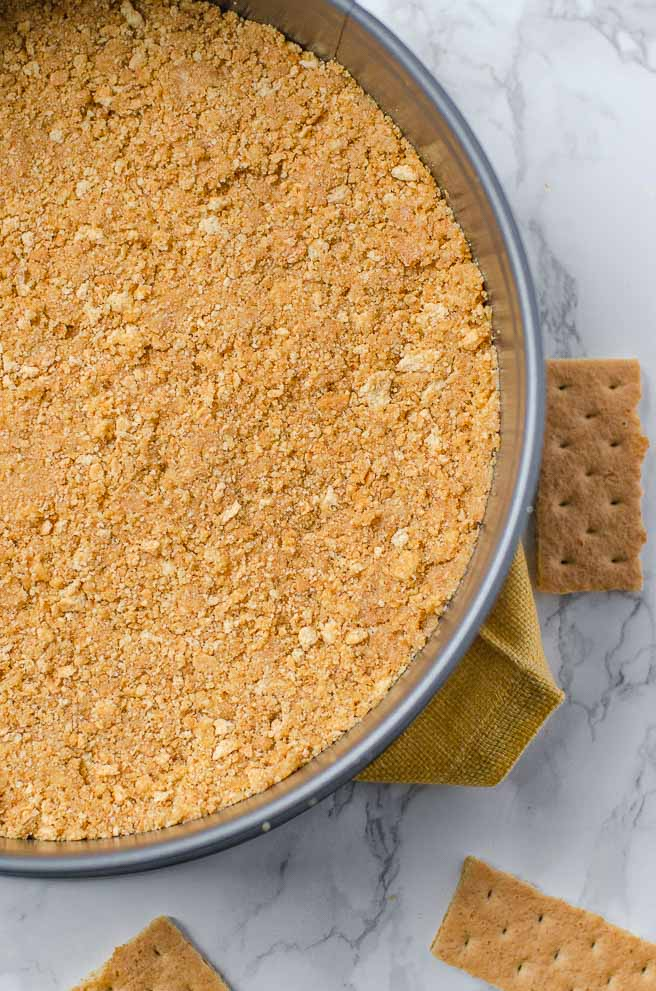

Perfect Cheesecake Crust
A tasty, firm crust everytime
Ingredients
CRUST
- 15 whole graham crackers
- 8 tablespoons unsalted butter
- 3 tablespoons sugar
- ⅛ teaspoon salt
EQUIPMENT
- Blender or food processor
- 9-inch springform pan
- 18-inch heavy-duty aluminum foil
Instructions
SET UP
- Preheat the oven to 375°F.
- Wrap the bottom of a 9-inch springform pan with aluminum foil to prevent water from touching the bottom.
- Repeat with another sheet of aluminum for safety.
- Oil the inside of the pan.
THE CRUST
- Break down the graham crackers in a food processor or blender until you get crumbs.
- Melt the butter in the microwave for 30 seconds on high
- Combine the sugar, salt, graham cracker, and butter in a medium bowl, and stir well. The texture should be like wet sand.
- Transfer the mixture to the springform pan and press firm into the pan using something with a flat bottom, such as a cup.
- Place pan into the over, reduce the temperature to 325°F, and bake for 10 minutes.